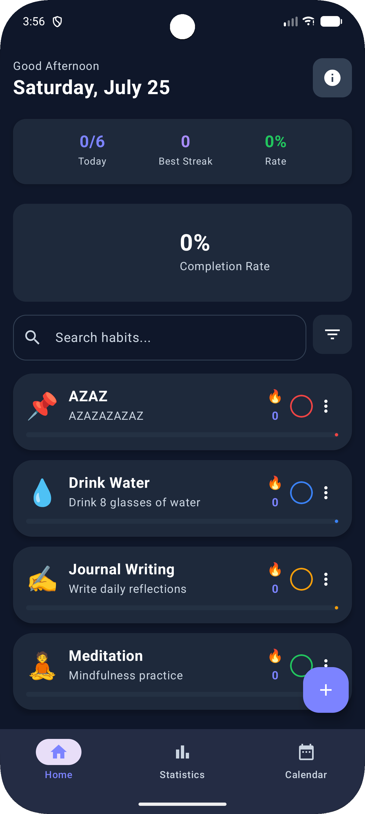
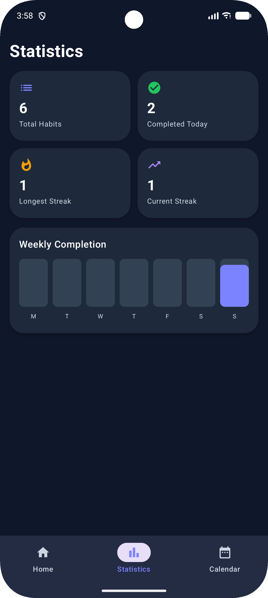
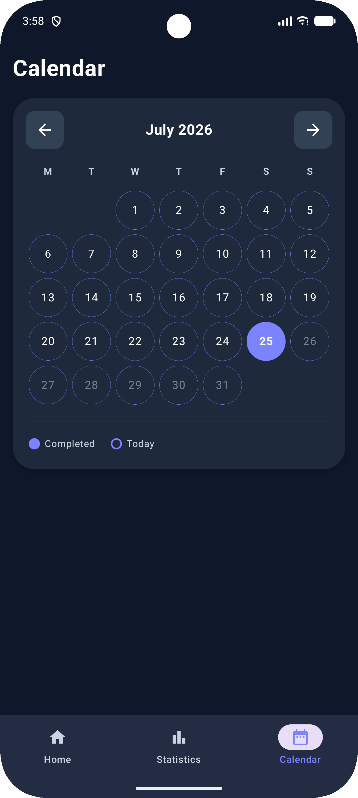
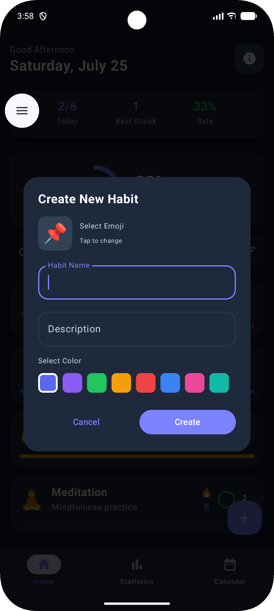

Privacy Policy
Your habits stay
on your phone.
HabitFlow was built without a server for your habit data, so there was never a pipe for it to leak through. Here's exactly what that means, in plain language.
What the app looks like
Four screens, so you know exactly what you're trusting with your data.

01 · Home

02 · Statistics

03 · Calendar

04 · Add Habit
What we collect
HabitFlow doesn't ask you to sign up, log in, or hand over any personal details. Every habit, streak, and completion date you enter is written straight to your device's own storage — it never touches a server we run, because we don't run one.
- Name, email, or contact details
- Location data
- Photos, contacts, or files
- Health data beyond what you type in
Data storage
Everything lives in local app storage on your phone. If you uninstall HabitFlow, that data is deleted along with it — we have no copy anywhere else, because there's nowhere else it was ever sent.
Third-party services
HabitFlow doesn't include analytics, advertising, or crash-reporting SDKs.
Permissions
HabitFlow doesn't request access to your camera, microphone, contacts, or location. It only uses the storage access needed to save your habits on-device.
Children's privacy
HabitFlow doesn't knowingly collect information from children under 13 (or the relevant age in your region) — it doesn't collect personal information from anyone, regardless of age.
Security
Because nothing is transmitted or stored on our end, there's no server-side database of your habits for us to protect. Your phone's own lock screen and encryption are what keep your local data safe — we'd recommend keeping those turned on.
Your rights
Since your data never leaves your device, you're already in full control of it. Clear the app's storage or uninstall HabitFlow from your device settings, and every trace of your habit history is gone.
Changes to this policy
If this policy changes, we'll update the date at the top of the page. Continuing to use HabitFlow after a change means you accept the updated version.
Contact
Questions about this policy? Reach out directly.